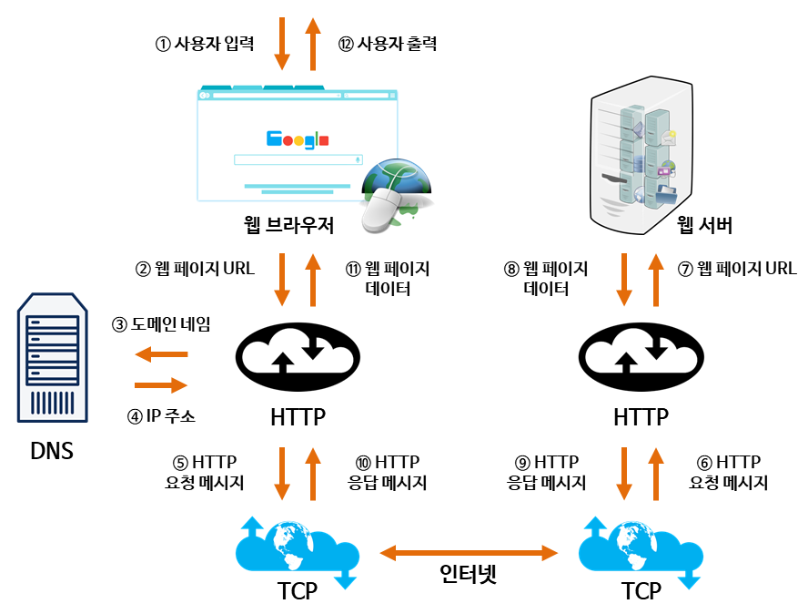
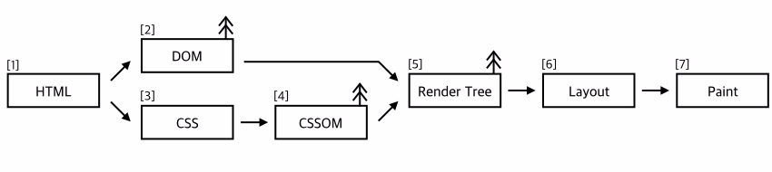

크게 위와 같은 과정이 이루어지게 된다.
[ 과정 ]
1. 사용자 입력
우리가 주소창에 www.naver.com 이라고 입력하게 되면, 해당 주소는 URL 형식을 띄고 있기 때문에 브라우저는 웹페이지 URL이라 인식하여 이 도메인 이름에 해당하는 IP주소를 요청하게 된다.
이 때, 우리가 protocol 부분을 따로 입력하면 https나 http로 요청하지만, 만약 www.naver.com 에서 ‘www.’ 부분을 생략하고 naver.com 이라고 입력하게 된다면, 프로토콜 부분을 생략하고 바로 도메인부분을 입력하면 기본적으로 http로 요청한다.
2. 도메인 네임
Server로 도메인 네임(naver.com)을 보내면 이걸 IP주소로 바꿔주는데, 이러한 시스템을 DNS라고 부른다.
DNS Server는 도메인들의 IP주소를 가지고 있는 데이터 서버인데, 우리는 naver.com이라는 도메인을 가지고 있는 IP주소를 DNS Server에 물어보게 된다.
3. IP주소
2번과 같은 과정을 거치면 DNS Server로 부터 IP주소를 얻게 된다.
4. HTTP 요청 메시지
위와 같은 과정을 통해 얻은 IP주소로 해당 페이지를 요청을 보냄.
5. HTTP 요청메시지 전달
HTTP 요청 메시지가 TCP 통신을 통해서 네이버 서버에 요청하게 됨.
웹 페이지 URL
네이버 서버는 개인PC로부터 HTTP 요청 메시지를 받게 됨. HTTP 요청 메시지 안에는 메소드 종류(GET), 경로, 문서 종류, 형식 종류, 헤더, 언어, 인코딩 스타일, 요청하는 컴퓨터의 브라우저 버전, 요청하는 문자의 길이 등의 정보를 담고 있다.
7. 웹 페이지 데이터 전송
요청에 대해 네이버 서버는 응답 페이지를 보내줌.
HTTP 요청 메시지로 위에서 요청 했듯이, 서버도 응답 페이지와 함께 HTTP 응답 메시지로 보내주게 됨.
8. HTTP 응답 메시지
http 응답 메시지도 요청 메시지와 비슷한 스타일로 돌아오게 됨.
9. 웹 페이지 데이터
그 후 받아온 응답페이지 html문서를 받아서 브라우저에 넣어줌.
10. 사용자 출력
브라우저가 반환받은 html데이터를 처리함.

위와 같은 과정을 거치게 되면,

최종적으로 위와 같은 화면을 출력하게 된다.